Перейти на главную страницу справочника.
Форма магнитного поля в полюсе.
- При составлении схем укладки и соединений трёхфазных обмоток электродвигателей, направление мгновенных значений тока в фазах выбирается промежуток времени указанный на Рис №1. Направление первой фазы А (жёлтый цвет) и второй фазы В (зелёный цвет) стрелки вверх, мгновенное значение тока в третьей фазе С (красный цвет) стрелка вниз т.е. противоположное направление от первой и второй фаз.
- Напряжение в фазе С равно полному напряжению сети, напряжение в фазах А и В равно половине напряжения сети в данном промежутке времени.
Рис. 1. 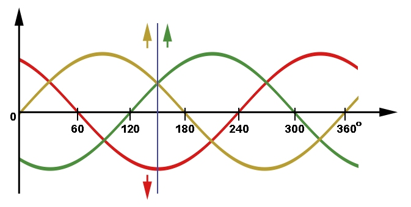
{kind=link}
Для примера возьмём трёхфазную однослойную обмотку Z1=36, 1500 об/мин, фазная зона занимает 3 паза в полюсе (q=3), номинальный ток для примера I=1,0 А.
- На Рис №2 однослойная обмотка разделена вертикальными линиями на четыре полюса 2р=4, число витков в пазу N=3. Стрелками (под пазами) показано направление мгновенных значений тока в полюсах и фазных зонах. Синяя штриховая линия определяет центр полюса. В каждой секции число 3, что означает число витков в секции.
- Над пазами график расположения витка в полюсе и тока в витке. Одна линия в графике означает один виток. Высота линий указывает величину напряжения и тока в витке. Так как в данный промежуток времени в фазе С полное напряжение то ток в витке (для данного примера) I=1,0 A, а в фазах А и В половина сетевого напряжения то ток в витке I=0,5 A, поэтому высота витков красного цвета в два раза больше чем жёлтого и зелёного.
- Смотрим полюс №1, пазы с 1 по 9, центр полюса паз 5. В центре полюса в пазах 4 5 и 6 размещена фаза С с полным напряжением и максимальным намагничивающим током I=1,0 A, в левой части полюса в пазах 1 2 и 3 размещена фаза А с половиной сетевого напряжения и соответственно в два раза меньшим чем в фазе С намагничивающим током I=0,5 А, в правой части полюса в пазах 7 8 и 9 размещена фаза В с половиной сетевого напряжения и соответственно в два раза меньшим чем в фазе С намагничивающим током I=0,5 А. Получается, намагничивающий ток по пазам в полюсе распределён ступенчато, максимальный в центре и в два раза меньший к краям полюса.
Рис. 2. 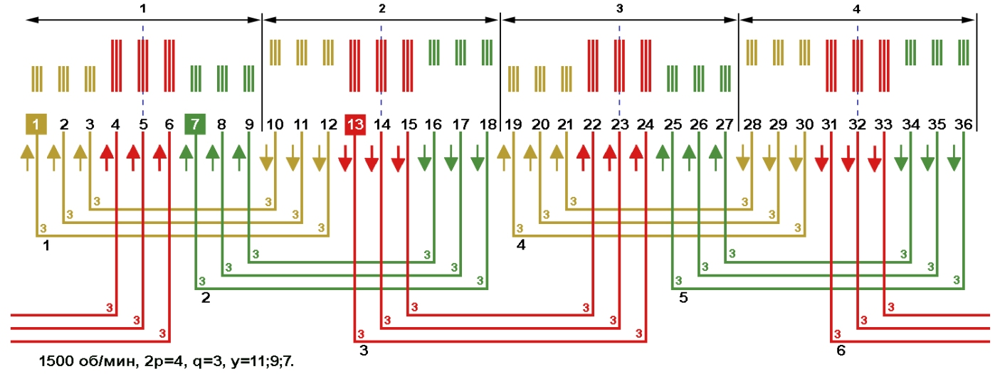
{kind=link}
- Для составления графика намагничивающей силы в полюсе, нужно ток умножить на число витков в пазу, или сложить токи каждого витка находящегося в пазу.
- На Рис №3 в первом пазу три витка фазы А с током 0,5 ампер. Умножаем ток на число витков: 0,5×3=1,5 ампер-витков. В графике над пазом 1 на высоте 1,5 ставим точку, точно так же в пазах 2 3 7 8 9. В четвёртом пазу три витка фазы С с током 1 ампер. Умножаем ток на число витков: 1×3=3 ампер-витков. В графике над пазом 4 на высоте 3 ставим точку, точно так же в пазах 5 и 6. Соединяем точки линией, визуально получилась форма магнитного поля в полюсе.
Рис. 3. 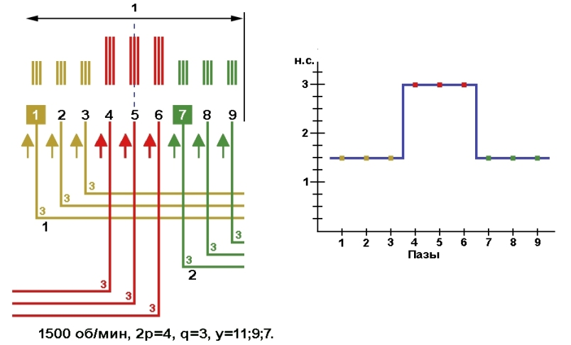
{kind=link}
- На Рис №4 график распределения магнитного поля по сердечнику статора. В полюсах 2 и 4 графики перевёрнутые, так как направление мгновенных значений тока вниз.
Рис. 4. 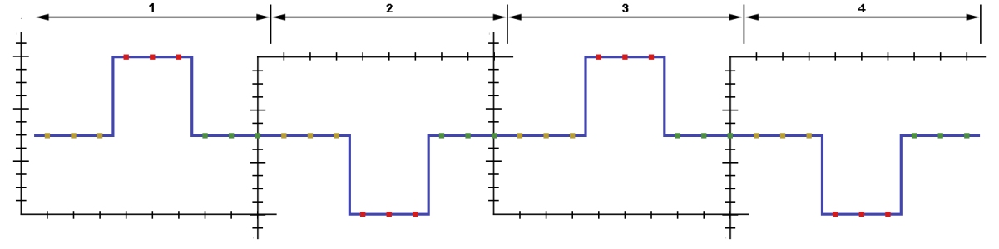
{kind=link}
- Для улучшения характеристик электродвигателя, ступенчатую кривую магнитного поля статора нужно приблизить к синусоиде. На Рис №5 красная линия, к которой нужно приблизить намагничивающую силу в пазах, т.е. в пазах 4 и 6 снизить, а в пазах 2 3 7 и 8 повысить намагничивающую силу.
- Так как фазы находятся в своих фазных зонах, а ток в витке может быть максимальным только в фазе С и в два раза меньшим в фазах А и В, то изменить форму магнитного поля в полюсе мы сможем изменив число витков в пазу, но сохраняя число витков в фазе. В однослойной трёхфазной обмотке выполнить это невозможно.
Рис. 5. 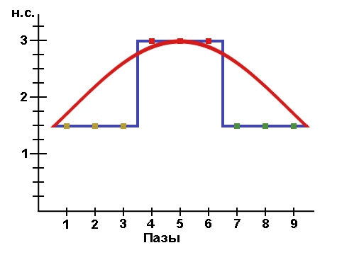
{kind=link}
Для примера возьмём двухслойную трёхфазную обмотку Z1=36, 1500 об/мин, номинальный ток I=1,0 А.
- Что бы приблизить форму магнитного поля к синусоиде, расширим фазные зоны путём применения двухслойной обмотки.
- На Рис №6 двухслойная обмотка с расширением фазной зоны на два паза. Для упрощения вычислений и графиков возьмём количество витков в пазу N=2 и номинальный ток I=1,0 А. В каждой секции число 1, что означает число витков в секции.
- По условиям симметрии, на графике расположение витка каждой фазы в полюсе должно одинаково (зеркально) распределяться как в левую так и в правую сторону от центрального паза. За счёт укорочения шага и расширения фазной зоны до пяти пазов получилось симметричное распределение фазных витков относительно центра полюса.
- В пазах 8 9 17 18 26 27 35 36 противоположное направление мгновенных значений тока. Но это не влияет на намагничивающий ток, потому что другие стороны этих секций находятся в разных пазах.
Рис. 6. 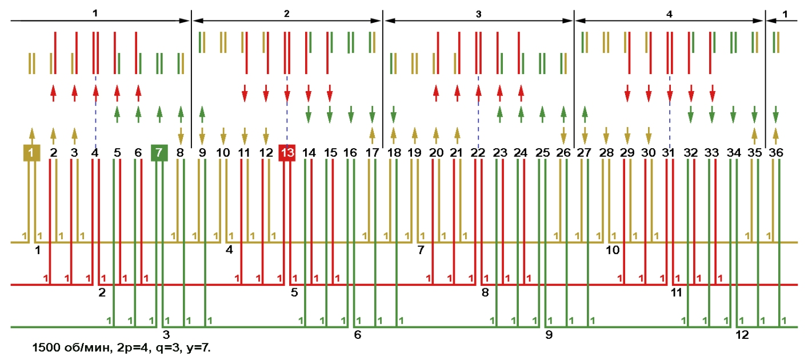
{kind=link}
- Для составления графика намагничивающей силы в полюсе, нужно сложить токи витков в пазу.
- На Рис №7 в пазу 18 по одному витку фаз А и В с током 0,5 ампер. Складываем токи витков 0,5+0,5=1 ампер-витков. В графике над пазом 18 на высоте 1 ставим точку, точно так же в пазах 19 25 26. В пазу 20 по одному витку фаз А с током 0,5А и С с током 1А. Складываем токи витков 0,5+1=1,5 ампер-витков. В графике над пазом 20 на высоте 1,5 ставим точку, точно так же в пазах 21 23 24. В центральном пазу 22 два витка фазы С с током 1А, 1+1=2 над пазом 22 на высоте 2 ставим точку. Соединяем точки линией, получилась форма магнитного поля в полюсе отличающаяся от однослойной обмотки на Рис №3 дополнительной ступенькой в пазах 20 21 23 24, которая приближает кривую магнитного поля статора к синусоиде. Что бы ещё более приблизить кривую магнитного поля к синусоиде, нужно увеличить число ступенек в полюсе, а максимально возможное число ступеней равно числу пазов в полюсе. Для взятого для примера двигателя дальнейшее увеличение числа ступеней в полюсе с помощью обычной двухслойной обмотки невозможно.
Рис. 7. 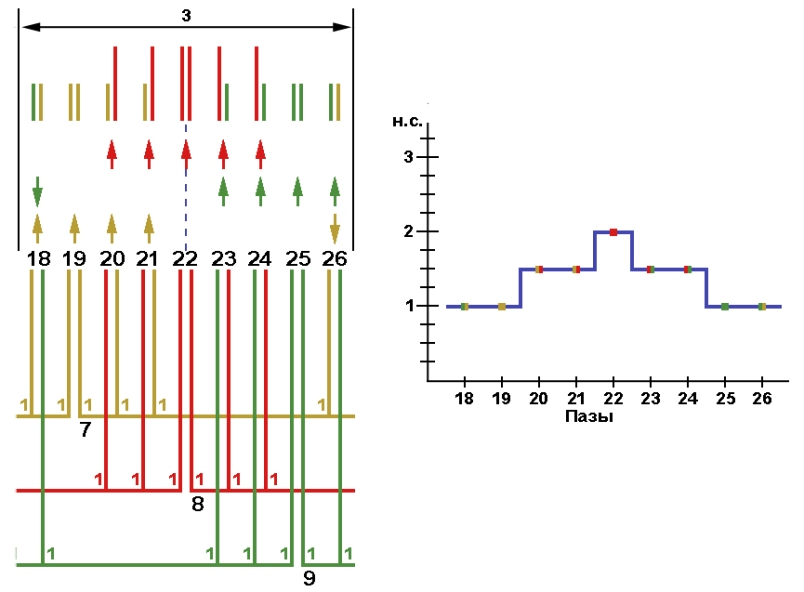
{kind=link}
Приближение намагничивающей силы в полюсе к синусоиде с помощью разновитковых секций в катушках.
При составлении данных схем, обращаем внимание на следующее:
- Схема укладки с концентрическими катушками. В центре полюса выбранной схемы один или несколько пазов в которых размещена только одна фаза С (красный цвет).
- Минимальное (условно принятое) число витков в пазу равно количеству секций в катушке.
- При составлении графика намагничивающей силы в полюсе, ступеньки ампер-витков должны находиться в зоне между максимальным и средним током.
- Стремиться к одинаковой высоте ступенек на графике намагничивающей силы в полюсе, что не всегда получается и зависит от расчётного числа витков в пазу.
- Одинаковое число витков в пазах, которые заняты только одной (одноимённой) фазой.
- Для примера возьмём схему укладки с концентрическими катушками Рис №8. В центре полюсов (пазы 4 13 22 и 31) расположена фаза С, что соответствует условиям расчёта. Так как секций в катушке три, то для примера число витков в пазу возьмём N=3. Для упрощения вычислений и графиков возьмём номинальный ток I=1,0 А. Получается в фазе С ток I=1,0 А, а в фазах А и В ток I=0,5 А.
Рис. 8.
- Для начала составим график намагничивающей силы в третьем полюсе Рис №9.
- В нижней части рисунка график расположения витка в полюсе и тока в витке, размещение фаз в пазах согласно схеме укладки на Рис №8. В центральном пазу три витка фазы С (красный цвет), от центра полюса в левую и правую сторону уменьшаем число витков на 1 в фазе С, а для сохранения общего числа витков в пазу в соседних фазах устанавливаем соответствующее число витков.
- Заполняем график намагничивающей силы в полюсе. В пазу 18 три витка с током 0,5 А 3×0,5=1,5 ампер-витков. В графике над пазом 18 на высоте 1,5 ставим точку, точно так же в пазах 19 25 26. В пазах 20 и 24 два витка с током 0,5 А и один с током 1,0 А. Складываем токи витков в пазу 0,5+0,5+1=2 ампер витка. Ставим точки в графике над пазами 20 и 24 на высоте 2. В пазах 21 и 23 два витка с током 1,0 А и один с током 0,5 А. Складываем токи витков в пазу 0,5+1+1=2,5 ампер витков. Ставим точки в графике над пазами 21 и 23 на высоте 2,5. В пазу 22 три витка с током 1,0 А 3×1=3 ампер-витка. В графике над пазом 22 на высоте 3 ставим точку.
- Соединяем точки линией, получилась форма магнитного поля в полюсе отличающаяся от двухслойной обмотки на Рис №7 дополнительной ступенькой в пазах 20 и 24, которая приближает кривую магнитного поля статора к синусоиде. Добавить ещё одну ступень (при условно принятых витков в пазу N=3) в данный график путём снижения намагничивающего тока в пазах 18 и 26 не получится, так как ступеньки ампер-витков должны находиться в зоне между максимальным и средним током, в данном примере 3 ампер-витка и 1,5 ампер-витков (выделены красным цветом). Но раз нельзя выходить за границы максимального и среднего тока, появляется желание с помощью увеличения витков в пазах 19 20 21 23 24 25 равномерно разместить ступеньки в разрешённой зоне, но и это не получится потому что пазы 19 22 и 25 занимают фазы А С В в которых обязательно должно быть одинаковое число витков соответственно и ток в данный промежуток времени в пазу 22 максимальный, а в пазах 19 и 25 средний. Форма магнитного поля должна быть одинаковой во всех промежутках времени и проверяется если в центре полюса взять фазу A или B.
{kind=link}
Рис. 9. 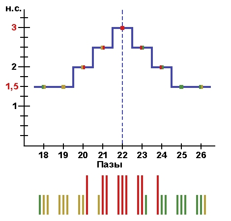
{kind=link}
- По схеме укладки обмотки Рис №10 проверяем общее число витков в пазу и расположение намагничивающего витка в пазах и секциях. Определяем чередование витков в секциях с шагом у=9.
- Начнём с катушки №1 первой фазы А, расположенной в пазах 1 2 3 8 9 10. В малой секции с шагом у=5 один виток, проверяем по графику в верхней части рисунка для паза 3 и паза 8. В средней секции с шагом у=7 два витка, проверяем по графику в верхней части рисунка для паза 2 и паза 9. Большая секция с шагом у=9 размещена в пазах 1 и 10, в этих же пазах расположены секции катушек одноимённой фазы с шагом у=9, поэтому число витков выбираем произвольно 2. Далее в катушке №2 фазы С в секции с шагом у=9 ставим число витков 1, в катушке №3 фазы В в секции с шагом у=9 ставим число витков 2 и т.д.
Рис. 10. 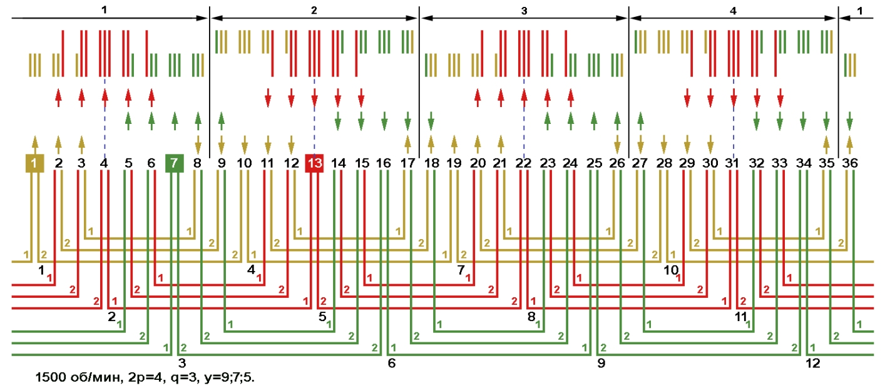
{kind=link}
Что изменилось в двигателе при приближении намагничивающей силы в полюсе к синусоиде.
- Для проверки выше показанных обмоток с числом пазов Z1=36 и 1500 об/мин, возьмём число витков в пазу N=25, а номинальный ток I=10,0 А. Получается в фазе С ток I=10 А, а в фазах А и В ток I=5 А.
- На Рис №11 график намагничивающей силы в однослойной обмотке. Складываем точки намагничивающих сил всех пазов полюса, получилось 1500.
Рис. 11. 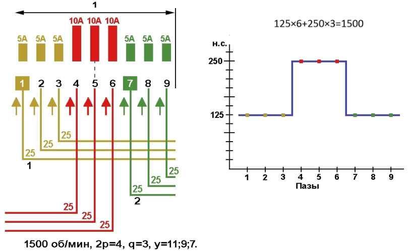
{kind=link}
- На Рис №12 график намагничивающей силы в двухслойной обмотке. Складываем точки намагничивающих сил всех пазов полюса, получилось 1500.
Рис. 12. 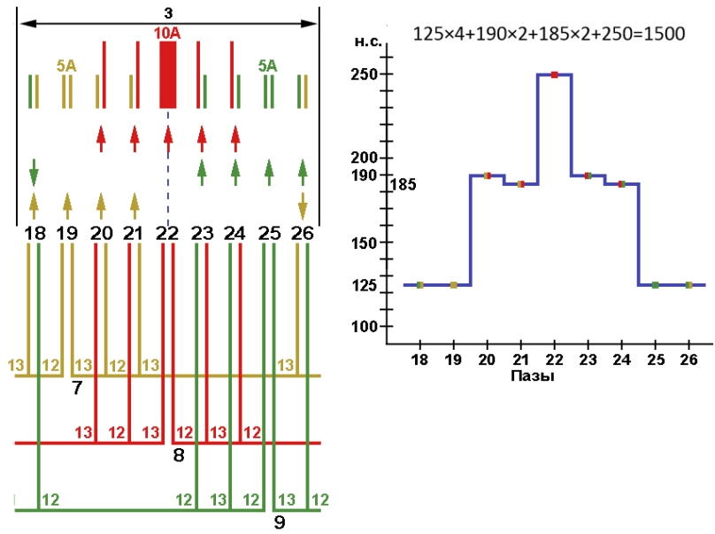
{kind=link}
- На Рис №13 график намагничивающей силы в двухслойной обмотке с разновитковыми секциями. Складываем точки намагничивающих сил всех пазов полюса, получилось 1500.
- Раз общее число намагничивающих сил в полюсе у всех обмоток одинаковые, так что же изменилось в характеристиках двигателя?
- На Рис №11 в однослойной обмотке три точки с максимальным током намагничивания 250 ампер-витков, а на рисунках №12 и №13 по одной точке 250 ампер-витков. Снизилась нагрузка на сердечник статора в определённой точке, но общее число намагничивающих сил в полюсе осталась прежним.
Рис. 13. 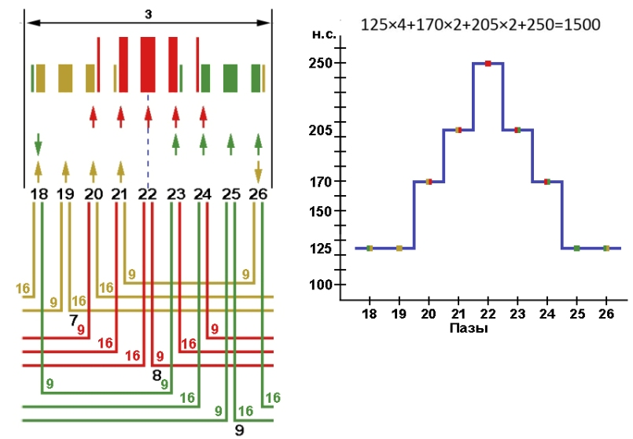
{kind=link}
- Что бы снизить максимальную точку намагничивающих сил в центре полюса, но сохранить при этом общее число ампер витков в полюсе и число витков в фазе, изменим расположение витков в пазу как показано на Рис №14.
Рис. 14. 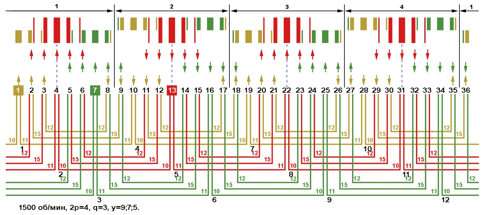
{kind=link}
- На Рис №15 график намагничивающей силы в двухслойной обмотке с разновитковыми секциями по Рис №14. Складываем точки намагничивающих сил всех пазов полюса, получилось 1500, но максимальная точка намагничивающей силы снизилась до 210 ампер-витков.
Рис. 15. 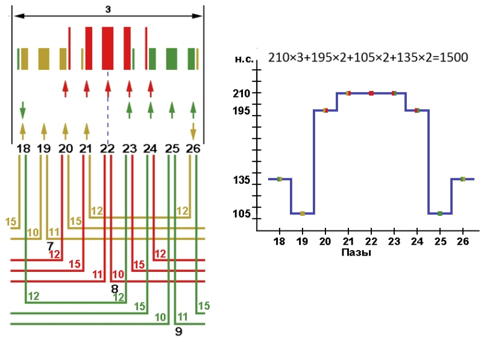
{kind=link}
- Изменим расположение витков в пазу как показано на Рис №16. Складываем точки намагничивающих сил всех пазов полюса, получилось 1500, ток в максимальной точке намагничивающей силы 225 ампер-витков.
- Обратите внимание, что ни о каком приближении формы магнитного поля к синусоиде у производителя и мысли нет, да и не синусоида здесь главная, а точка намагничивающего тока, но вот снижение намагничивающего тока в центре полюса вышло на первое место в новых двигателях. Если производитель в одном месте снизил нагрузку на сердечник статора, значит в другом увеличил, а увеличил индукцию в зубцах статора. При увеличении индукции в сердечнике статора, все точки намагничивающей силы на графике поднимаются на определённую ступеньку в верх т.е. общее число намагничивающей силы в полюсе увеличивается, а максимально возможное увеличение намагничивающей силы в данном случае ограничивается максимально допустимой плотностью тока в проводнике и максимально допустимой магнитной индукции стали сердечника.
- Пересчёт таких двигателей на обычную обмотку приведёт к ухудшению характеристик по сравнению с заводской обмоткой.
Рис. 16. 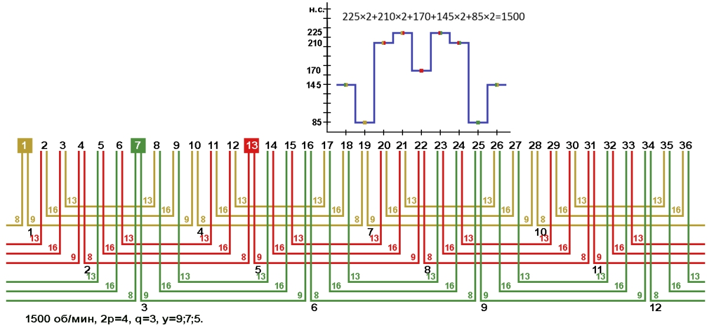
{kind=link}
- На Рис №17 двухслойная обмотка с шагом у=6. Для сохранения условий расчёта и числа витков в пазу N=25, в секции условно принято 12,5 витков. Складываем точки намагничивающих сил всех пазов полюса, получилось 1500, но максимальная точка намагничивающей силы снизилась до 187,5 ампер-витков.
- Если по каким либо причинам не удалось снять обмоточные данные с нового типа двигателя с разновитковой обмоткой, то лучше пересчитать электродвигатель на эту схему укладки и увеличить индукцию в зубцах статора. Для данного примера взять число витков в секции 12, в пазу получится N=24. При увеличении индукции в сердечнике статора соответственно увеличивается и плотность тока в проводе, поэтому обмотка выполняется в несколько параллельных проводников желательно с таким же или близким сечением проводов как было в заводской обмотке.
Рис. 17. 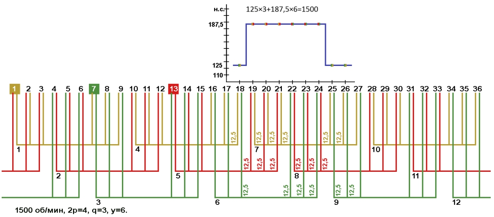
{kind=link}
Разновитковые секции в катушках однофазных электродвигателей.
- Для примера возьмём схему укладки однофазного двигателя Z1=24, 3000 об/мин, Рис №18.
Записываем следующие обмоточные данные и величины:
- Число витков в пазу рабочей обмотки Nр=25.
- Диаметр и сечение провода рабочей обмотки d=1,06, Sр=0,882.
- Число витков в пазу пусковой обмотки Nп=50.
- Диаметр и сечение провода пусковой обмотки d=0,75, Sп=0,441.
- Плотность тока в проводе выбираем j=6 А/мм2.
- Максимальный ток в рабочей обмотке Sр×j=0,882×6=5,292, для расчётов ток I=5,3 А.
- Максимальный ток в пусковой обмотке Sп×j=0,441×6=2,646, для расчётов ток I=2,65 А.
Рис. 18.
- Для составления графика намагничивающей силы Рис №19, график чертим не над полюсом, а над пазами 9 10 11 12 13 14 15 16 с рабочей обмоткой в центре, и по краям в пазах 7 8 17 18 левая и правая сторона пусковой катушки №3.
- Заполняем график намагничивающей силы. Число витков в пазу рабочей обмотки Nр=25 умножаем на ток в рабочей обмотке Iр=5,3 А, 25×5,3=132,5 ампер-витков. В графике над пазами 9 10 11 12 13 14 15 и 16 ставим точки на высоте 132,5. Число витков в пазу пусковой обмотки Nп=50 умножаем на ток в пусковой обмотке Iп=2,65 А, 50×2,65=132,5 ампер-витков. В графике над пазами 7 8 17 и 18 ставим точки на высоте 132,5. Соединяем точки линией, получилась прямолинейная форма магнитного поля.
Рис. 19. 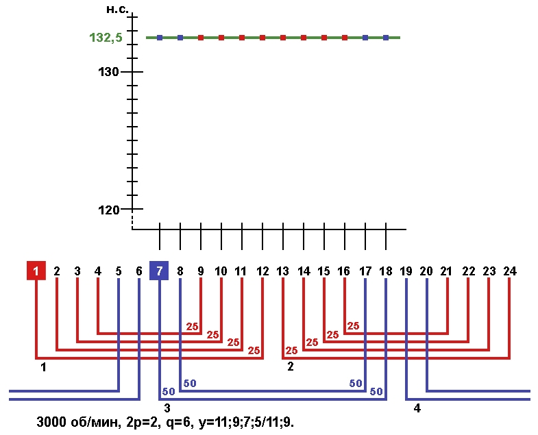
{kind=link}
- Что бы улучшить характеристики электродвигателя нужно изменить прямолинейную форму магнитного поля и приблизить её к синусоиде, при чём волна синусоиды должна подниматься и опускаться на одинаковые расстояния от рассчитанной намагничивающей силы обычной обмотки 132,5 ампер-витков.
- Изменение числа витков в пазу начинаем с рабочей обмотки. Для быстрого вычисления количества витков в пусковой обмотке, на Рис №20 вместо намагничивающей силы вписываем числа витков в пазу рабочей обмотки. Число витков Nр=25 в пазу рабочей обмотки обязательно должно присутствовать в секции новой обмотки, так как является центром намагничивающей силы (на графике зелёная стрелка). В какой секции рабочей обмотки сохранить 25 витков определяем по участку с пазам 7 8 9 10 11 12. Так как в пазах 7 и 8 пусковая обмотка с током в два раза меньше чем в рабочей, то эти два паза считаем за один и тогда средним пазом получается 10 с секцией рабочей катушки у=7. В секции с шагом у=9 ставим 26 витков, в секции с шагом у=11 ставим 27 витков, в малой секции с шагом у=5 ставим на два витка меньше чем в пазу 10. Общее число витков в рабочей катушке изменилось, в старой 100, а в новой 101.
- Заполняем график. В 12 пазу 27 витков, ставим точку на высоте 27. В 11 пазу 26 витков, ставим точку на высоте 26. В 10 пазу 25 витков, ставим точку на высоте 25. В 9 пазу 23 витка, ставим точку на высоте 23. Далее в пазах 8 и 7 расположена пусковая обмотка и осталось всего две ступени что бы вернут кривую магнитного поля в максимальную точку намагничивания, т.е. через центр в верх графика. В центре графика в рабочей обмотке 25 витков, в пусковой обмотке ток в два раза меньше чем в рабочей, поэтому число витков в пусковой обмотке Nр×2=25×2=50 для паза №8. В верхней части графика в рабочей обмотке 27 витков, то витков в пусковой Nр×2=27×2=54 для паза №7.
- После заполнения графика по всему статору соединяем точки линией, получилась форма магнитного поля в которой большее число точек намагничивающей силы находятся в верхней части графика, именно этот факт улучшает характеристики электродвигателя.
- Для сравнения обычной обмотки с обмоткой с разновитковыми секциями в катушке, посчитаем общее число намагничивающей силы в полюсе, т.е. общее число намагничивающих сил в пазах статора разделим на число полюсов 2р=2.
В обычной обмотке: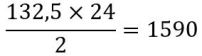
В обмотке с разновитковыми секциями: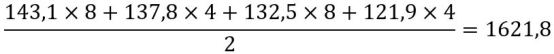
Рис. 20. 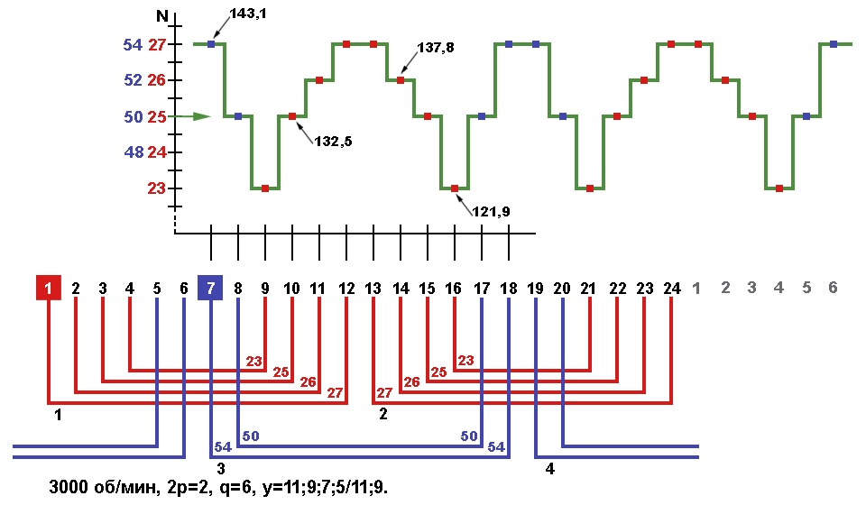
{kind=link}
- Так как данный способ расчёта является самым оптимальным для однослойных однофазных обмоток с числом пазов Z1=24, 3000 об/мин, то по таблице на Рис №21 можно быстро пересчитать обычную обмотку на обмотку с разновитковыми секциями в катушках.
Рис. 21. 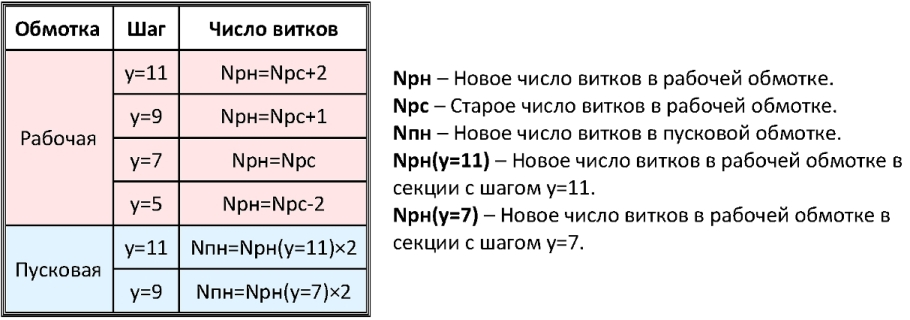
{kind=link}
- Поменяем местами максимальные и минимальные числа витков в секциях. Изменилась форма магнитного поля, но общее число намагничивающих сил в полюсе осталось прежним.
Рис. 22. 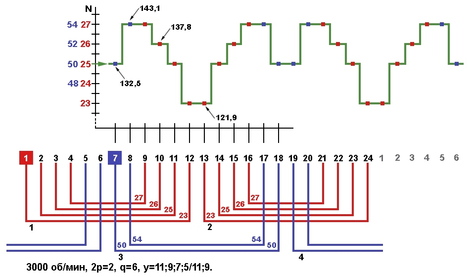
{kind=link}
- Если однофазный двигатель с алюминиевой обмоткой (иногда и с медной) пересчитать по сердечнику статора на трёхфазную с медной обмоткой, а потом обратно в однофазную да ещё с разновитковыми секциями в катушках, получится двигатель с максимально возможными улучшенными характеристиками.
05.07.2020 г.